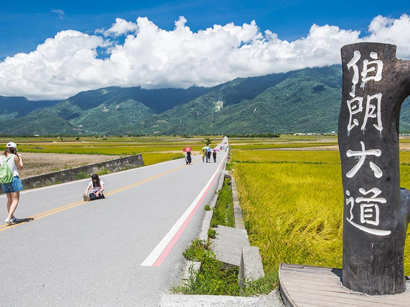

山有山的步調，海有海的味道。吃一口在地，走一段風景，找到你喜歡的慢生活。
從一碗米苔目，到一整片太平洋。
試試其他關鍵字，或放寬地區條件。
選一條喜歡的路線，把吃和玩排進同一天。

伯朗大道 → 池上飯包 → 大坡池
舊街東河包子 → 三仙台海岸
路線為旅行靈感，未包含交通時間；請依出發地、天候與現場開放情形調整。
三仙台八拱橋目前整修封閉，預計 2027 年底完工；可依現場指示欣賞本島側海景。熱氣球屬季節性活動，請先確認活動日期及天候。
把喜歡的地方，串成自己的風景。
收藏保存在這個瀏覽器。使用 ↑ ↓ 調整順序。